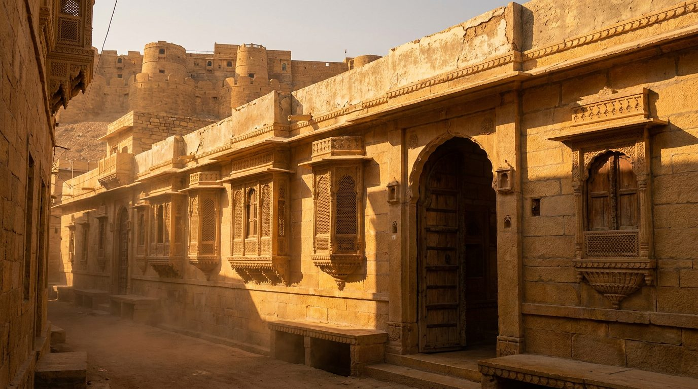
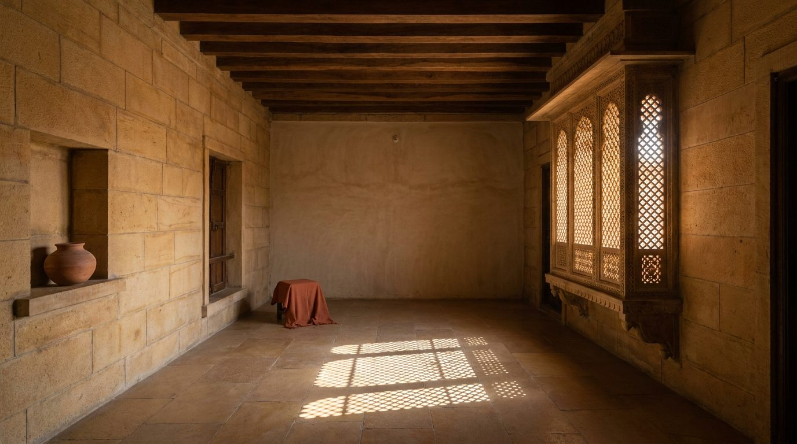

Atlante · INT-IN-02 · India · Asia
Haveli in arenaria a Jaisalmer con cortile, jharokha e jali intagliata
Esempi · esterno e interno


Perché funziona
In India il cliente compra tempo e artigianato: una casa che sia già stata abitata dalla storia. Jaisalmer vende l'arenaria, la jali e il cortile, cioè tre cose che nessun render inventa bene. Per Poetica è la voce quiet opposta all'attico di Mumbai: stessa nazione, materia opposta. Il made in Italy entra per sottrazione — una seduta bassa, un lino, un vetro soffiato — e non deve mai mimare il fasto rajput con specchi e cuscini ricamati. Nemmeno deve diventare un set da documentario etnografico: la stanza resta vuota e la luce fa il resto.
Architettura · elementi riproducibili
- cortile interno 4200x4200 mm con vasca 1200x1200 mm e pavimento in arenaria 500x500 mm
- jharokha aggettante 900 mm, sporgenza 450 mm, chiuso da jali in arenaria con foro 40 mm
- muro in arenaria dorata spessore 450 mm, conci a vista con giunto di calce 6 mm
- soffitto a 3600 mm con travi in teak 150x150 mm a interasse 900 mm
- porta intagliata in teak 1200x2400 mm a due battenti, soglia in pietra 150 mm
- finestra bassa 900x1200 mm con davanzale a 600 mm, schermata da jali
- intonaco di calce a frattazzo spessore 15 mm sulle pareti interne, nessuna tinta
Fatto verificato: il Jaisalmer Fort, detto Sonar Qila o forte d'oro, fa parte del sito seriale UNESCO Hill Forts of Rajasthan, iscritto nel 2013; è l'esempio di forte-collina in ambiente desertico, con la città murata ancora abitata, templi giainisti e haveli.
Fatto verificato: il Patwon Ki Haveli è un complesso di cinque haveli interconnesse, commissionato nel 1805 dal mercante Guman Chand Patwa e completato in circa cinquant'anni, in arenaria gialla, con jharokha a reticolo per ventilare e guardare la strada, portali ad arco e, all'interno, soffitti alti, pilastri intagliati e specchi.
Fatto verificato: Jaisalmer è fondata nel 1156 da Rawal Jaisal come forte di fango ed è detta Golden City per l'arenaria gialla; i templi giainisti del forte, del XII-XV secolo, sono intagliati nello stesso arenaria in stile Dilwara.
Valutazione: ho scelto Jaisalmer e non la casa coloniale di Goa perché qui i fatti sono più verificabili (sito UNESCO, haveli datate) e la materia è più forte: una sola pietra per muri, pavimenti e schermi. Goa avrebbe dato un registro pastello più vicino al Colorful, quindi meno contrasto con l'attico di Mumbai.
Luce
Prompt di generazione (EN)
Empty first-floor room of a Jaisalmer haveli, 3.6 m ceiling with 150 x 150 mm teak beams at 900 mm centres, walls of 450 mm golden sandstone ashlar with 6 mm lime joints, one inner wall in lime plaster, a projecting jharokha 900 mm deep closed by a carved sandstone jali, a low window 900 x 1200 mm with a 600 mm sill, floor of 500 x 500 mm sandstone slabs, one shallow niche holding a single unglazed pot. One key light: nine a.m. desert sun at 28 degrees, 4500 K, entering through the jali and printing a fine grid on the floor, interiors left dark and cool. 35 mm lens, camera at 1.4 m, two-point perspective, verticals parallel, warm monochrome sandstone grade with one terracotta textile accent, no people, no text, no logos.